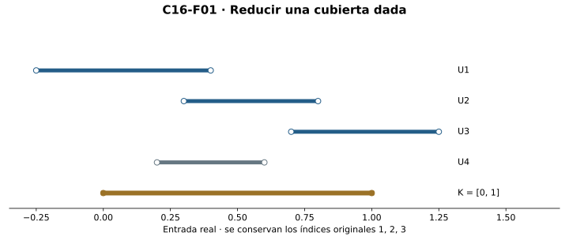
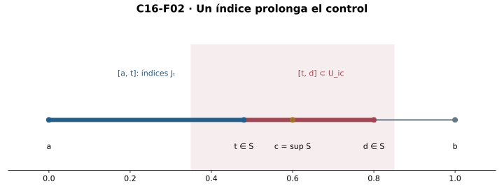
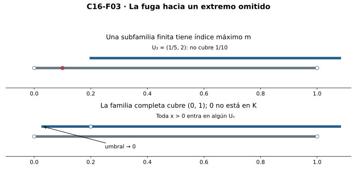
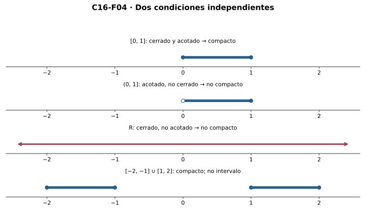
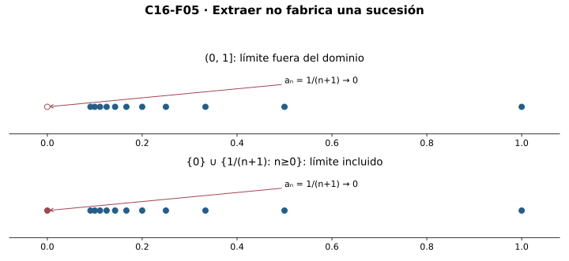
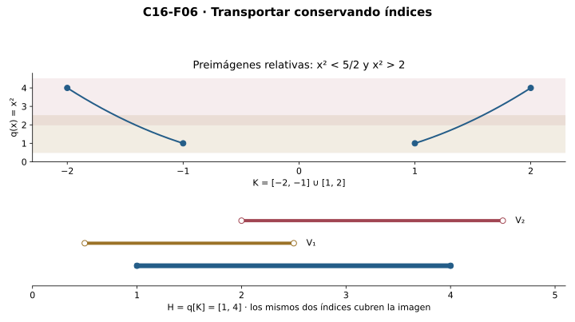
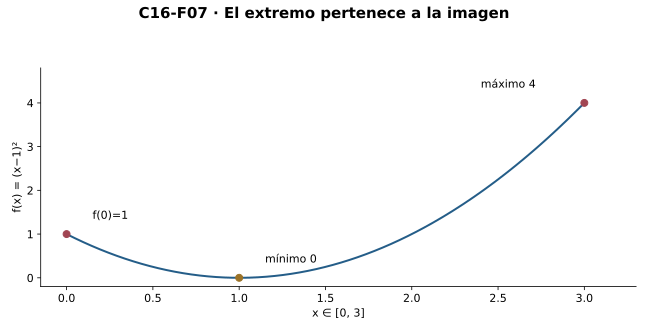
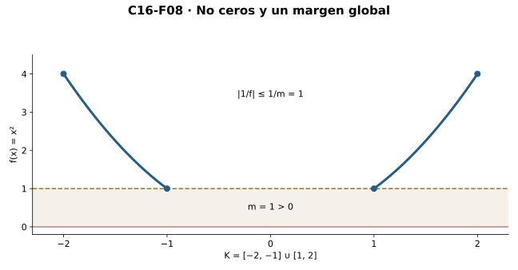

Capítulo 16 — Compacidad: del control local al control finito
Índice del libro · Capítulo 16 · Ejercicios · Soluciones · Soluciones de microcontroles
Una cubierta abierta puede contener infinitos controles locales. La compacidad exige que, para cada cubierta dada, baste un conjunto finito de sus índices para proteger todos los puntos. Ese paso de lo local a lo finito permitirá convertir continuidad en extremos alcanzados y márgenes positivos.
Partimos de abiertos y cerrados de C04, extracción de sucesiones dadas de C08 y continuidad de C14, con supremo de C00, límites de C06 y tipos de C12 como interfaces heredadas. Primero probaremos que un segmento es compacto usando supremo; después deduciremos Heine–Borel sin usar sucesiones. Distinguiremos extracción de una ruta dada y selección de una ruta nueva. Las imágenes continuas, los extremos y las inversas se tratarán por cubiertas y cerradura. No usamos continuidad uniforme ni derivadas. La recíproca secuencial general se declara condicional a CC(R); para una enumeración dada se construyen los testigos por mínimos de índices.
16.1. Una cubierta dada y una reducción finita
En C14 un punto recibía un radio de control; en C15 la ausencia de separaciones producía valores intermedios. Ahora buscamos otra forma de pasar de información local a una conclusión global: que una familia de vecindades pueda reducirse a un número finito de ellas, sin dejar puntos sin cubrir.
Definición. Una cubierta abierta de \(K\subseteq\mathbb R\) es una familia dada \(U:I\to\mathcal P(\mathbb R)\), cuyos miembros \(U_i\) son abiertos reales, tal que
\[K\subseteq\bigcup_{i\in I}U_i.\]
La cobertura significa \(\forall x\in K\;\exists i\in I:\;x\in U_i\). No presupone una función que elija un índice para cada punto. Una subcubierta finita es una restricción a un conjunto finito \(J\subseteq I\) que todavía cubre \(K\). Se conservan miembros de la familia original; no se reemplazan por nuevos abiertos. Índices diferentes pueden tener el mismo abierto asociado.
Compacidad. \(K\) es compacto si toda cubierta abierta dada de \(K\) admite una subcubierta finita. El orden de cuantificadores es: familia arbitraria completa, luego un conjunto finito de índices, luego cobertura de todos los puntos. Exhibir una única cubierta finita no prueba compacidad: \(\{\mathbb R\}\) cubre finitamente cualquier conjunto real. Para refutarla, en cambio, basta una cubierta concreta sin ninguna reducción finita.

R1. Casos finitos y una primera fuga. El vacío es compacto: de cualquier cubierta tomamos \(J=\varnothing\), cuya unión cubre el vacío. Para un singleton \(\{a\}\), la cobertura proporciona un índice \(i\) con \(a\in U_i\); \(J=\{i\}\) basta. Una unión de dos compactos es compacta: una cubierta de la unión cubre por separado ambas piezas, que entregan conjuntos finitos \(J_1,J_2\); la unión finita \(J_1\cup J_2\) cubre todo. Inducción finita da compacidad de conjuntos finitos y de uniones finitas de compactos. No se está escogiendo una subcubierta por cada miembro de una familia infinita.
La recta no es compacta. Los abiertos \(U_n=(-(n+1),n+1)\), \(n\in\mathbb N\), la cubren por arquimedianidad. Para un conjunto finito no vacío de índices \(J\), existe \(m=\max J\); todos sus miembros están en \(U_m\), y \(m+2\) queda fuera. La subfamilia vacía tampoco cubre la recta. Se ha refutado la posibilidad de cualquier \(J\) finito en esta cubierta.
Herramienta finita. Un conjunto finito no vacío de reales tiene mínimo y máximo: se ordena una lista finita comparando dos valores en cada paso. Si sus valores son todos positivos, el mínimo es positivo porque es uno de ellos. Para una familia infinita positiva esto no vale: \(1/(n+1)>0\) para todo \(n\), pero su ínfimo es cero. La compacidad será valiosa precisamente porque entrega un conjunto finito concreto antes de tomar un mínimo.
Microcontroles
- ¿Qué distingue una cubierta finita particular de la compacidad?
- ¿Qué debe conservar una subcubierta de \((U_i)_{i\in I}\)?
- ¿La cobertura \(\forall x\in K\;\exists i:x\in U_i\) ya da una función de índices por punto?
- ¿Cómo se cubre finitamente el vacío dentro de cualquier cubierta?
- ¿Por qué una cubierta arbitraria de un singleton tiene subcubierta finita?
- ¿Cómo se combinan dos subcubiertas finitas para cubrir una unión de compactos?
- ¿Por qué \(U_n=(-(n+1),n+1)\) no tiene una subcubierta finita de la recta?
- ¿El ínfimo de una familia infinita de radios positivos tiene que ser positivo?
16.2. El supremo prolonga los segmentos cubiertos
R2. Todo segmento \([a,b]\), con \(a\le b\), es compacto. No partiremos de Heine–Borel: debemos producir una reducción finita para una cubierta arbitraria. Fijamos \(U:I\to\mathcal P(\mathbb R)\) que cubre \([a,b]\), y registramos hasta dónde hay cobertura finita:
\[S=\{x\in[a,b]:[a,x]\text{ admite una subcubierta finita de }U\}.\]
Este conjunto guarda una propiedad existencial, no una elección \(x\mapsto J_x\). Contiene \(a\), porque algún abierto de la cubierta contiene ese punto y cubre el segmento degenerado \([a,a]\). Está acotado por \(b\). La completitud de C00 proporciona \(c=\sup S\) con \(a\le c\le b\).
La cobertura proporciona un índice \(i_c\) con \(c\in U_{i_c}\). La apertura da \(r>0\) tal que \((c-r,c+r)\subseteq U_{i_c}\). La propiedad aproximante del supremo entrega \(t\in S\) con \(c-r/2<t\le c\): si no hubiera tal \(t\), el real \(c-r/2<c\) sería una cota superior de \(S\), contradicción.
Fijamos una subcubierta finita \(J_t\) de \([a,t]\), disponible para este único \(t\). Definimos
\[d=\min(b,c+r/2).\]
Entonces \(c\le d\le b\), y para todo \(z\in[t,d]\) tenemos \(c-r<z<c+r\), pues \(t>c-r/2\) y \(d\le c+r/2\). Así \([t,d]\subseteq U_{i_c}\). Los índices \(J_t\cup\{i_c\}\) son finitos y cubren \([a,d]\): hasta \(t\) actúa la cobertura anterior, y desde \(t\) hasta \(d\) el nuevo abierto. Por definición, \(d\in S\).

c contradice la cota. Cuando c=b, la misma construcción da d=b∈S. Las posiciones son ilustrativas.">Como \(c\) es cota superior, \(d\le c\). Si \(c<b\), la fórmula del mínimo da \(d>c\), contradicción. Por tanto \(c=b\). Pero la prueba aporta algo más que esa igualdad: el punto construido \(d\) pertenece a \(S\) y, al ser \(c=b\), también \(d=b\). Hemos demostrado \(b\in S\), cuya definición entrega la subcubierta finita buscada de \([a,b]\).
El último paso es esencial. De \(\sup S=b\) no se deduce por sí solo \(b\in S\); \(S=[a,b)\), cuando \(a<b\), ilustra ese error lógico. Aquí la apertura de un abierto que contiene el extremo final cierra la cobertura. El mismo argumento incluye \(a=b\), aunque R1 ya resuelve ese caso; si la notación \([a,b]\) se usa con \(a>b\), denota el vacío y R1 vuelve a aplicarse.
No se eligió un abierto para cada punto ni una subcubierta para cada segmento. Se fijaron sólo los testigos asociados a \(c\) y a un \(t\) concreto. El intervalo y la completitud localizaron la frontera; la apertura impidió que la reducción finita se detuviera antes del final y permitió alcanzarlo.
Microcontroles
- ¿Qué registra el conjunto \(S\) en la prueba de compacidad de \([a,b]\)?
- ¿Por qué \(S\) es no vacío y acotado superiormente?
- ¿Qué proporciona la apertura de un miembro que contiene \(c=\sup S\)?
- ¿Por qué existe \(t\in S\) con \(c-r/2<t\le c\)?
- ¿Qué impide que \(d=\min(b,c+r/2)\) salga del segmento?
- ¿Por qué \(J_t\cup\{i_c\}\) cubre \([a,d]\)?
- ¿De \(\sup S=b\) se deduce siempre \(b\in S\)?
- ¿Qué cambia para \(a=b\) o para \(a>b\)?
16.3. Heredar compacidad sin perder índices
Una parte de un compacto puede dejar escapar puntos de adherencia. Antes de conocer Heine–Borel necesitamos identificar qué partes conservan la propiedad de cubiertas.
R3. Un cerrado relativo de un compacto es compacto. Sea \(K\) compacto, \(A\subseteq K\) cerrado relativo. Por C04/C14 existe un cerrado real \(F\) con \(A=K\cap F\). Fijamos una cubierta abierta arbitraria \((U_i)_{i\in I}\) de \(A\). Puede no cubrir \(K\setminus A\). Para cubrir lo que falta añadimos el abierto completo \(V=\mathbb R\setminus F\).
Si \(x\in K\), o está en \(F\), y entonces pertenece a \(A\) y a algún \(U_i\), o está en \(V\). Por ello la familia ampliada cubre \(K\). Para que el índice adicional no colisione con uno antiguo, etiquetamos los índices originales como \((i,0)\) y reservamos un índice nuevo \(*\) con etiqueta distinta. En la familia ampliada, \((i,0)\) conserva el valor \(U_i\) y \(*\) tiene valor \(V\). Compacidad entrega un conjunto finito de índices ampliados.
Retenemos los índices originales que aparecen allí; la proyección \((i,0)\mapsto i\) conserva finitud. Para un \(x\in A\), ningún abierto adicional puede ser el único que lo cubra: \(x\in F\) implica \(x\notin V\). Por tanto un índice original de la lista finita cubre \(x\). Los índices retenidos dan una subcubierta finita de la cubierta original de \(A\). Puesto que ésta era arbitraria, \(A\) es compacto.
El abierto añadido debe cubrir todo \(K\setminus A\), no sólo la zona próxima a un extremo de un segmento ambiente. Y se retiran índices, no necesariamente un valor de abierto de una colección sin etiquetas: si un valor estaba repetido, las etiquetas mantienen qué miembros procedían de la cubierta original.
Primera reutilización. Si \(F\) es cerrado real, \(K\cap F\) es compacto por R3. Todo cerrado acotado contenido en un segmento será, por tanto, candidato para la dirección suficiente de Heine–Borel. Para \(K=[-2,2]\) y \(F=(-\infty,-1]\cup[1,\infty)\) obtenemos el compacto \([-2,-1]\cup[1,2]\), aunque tenga dos piezas.
La hipótesis de cerradura no se puede quitar. El subconjunto \((0,1)\) de \([0,1]\) admite la cubierta
\[U_n=(1/(n+2),2),\qquad n\in\mathbb N.\]
Para cada \(x\in(0,1)\), arquimedianidad permite \(n\) con \(1/(n+2)<x\), de modo que la familia cubre. Una subfamilia finita no vacía tiene índice máximo \(m\), y su unión es \(U_m\) porque los abiertos aumentan con \(n\). El punto \(1/(2(m+2))\) pertenece a \((0,1)\) y queda fuera de esa unión. Ninguna subfamilia finita cubre el dominio; la vacía tampoco. Éste es el escape que la cerradura relativa impediría.

Microcontroles
- ¿Qué representación se usa para un cerrado relativo \(A\subseteq K\)?
- ¿Por qué se añade todo \(\mathbb R\setminus F\) a la cubierta de \(A\)?
- ¿Para qué sirve etiquetar el índice nuevo de la cubierta ampliada?
- ¿Por qué el abierto añadido no es necesario para cubrir puntos de \(A\)?
- ¿Todo subconjunto de un compacto es compacto?
- ¿Qué punto queda fuera de una subfamilia finita de esa cubierta, con índice máximo \(m\)?
- ¿Es compacta la intersección de un compacto con un cerrado real?
- ¿La herencia de compacidad exige que el cerrado relativo sea intervalo?
16.4. Heine–Borel: cerrar las dos direcciones
R4. En la recta real, compacto equivale a cerrado y acotado. Probaremos las dos necesidades desde cubiertas y la suficiencia desde R2/R3. No intervienen sucesiones ni una equivalencia secuencial anticipada.
Acotación necesaria. Sea \(K\) compacto no vacío. La cubierta \(U_n=(-(n+1),n+1)\) cubre toda la recta y también \(K\). Una subcubierta finita debe tener índices no vacíos. Si \(m\) es su máximo, \(K\subseteq U_m\subseteq[-(m+1),m+1]\). Para \(K=\varnothing\) sirven las cotas cero. Aquí el máximo se toma después de obtener finitud, no sobre la familia infinita original.
Cerradura necesaria. Fijemos \(p\notin K\), con \(K\) no vacío. Los abiertos determinados por fórmula
\[V_n=\{x\in\mathbb R:|x-p|>1/(n+1)\},\qquad n\in\mathbb N,\]
son uniones de dos rayos abiertos. Cubren \(K\): para cada \(x\in K\), \(|x-p|>0\), y algún recíproco \(1/(n+1)\) es menor que esa distancia. Una subcubierta finita con máximo índice \(m\) da \(K\subseteq V_m\), pues los \(V_n\) aumentan. Por consiguiente, la bola de centro \(p\) y radio \(1/(m+1)>0\) no toca \(K\). Se ha construido una vecindad del punto exterior dentro del complemento. Como \(p\) era arbitrario, \(\mathbb R\setminus K\) es abierto y \(K\) cerrado. Si \(K\) es vacío, su complemento es la recta y ya es abierto.
Suficiencia. Supongamos \(K\) cerrado y acotado. Hay \(M>0\) tal que \(K\subseteq[-M,M]\). Ese segmento es compacto por R2. La igualdad \(K=[-M,M]\cap K\) presenta a \(K\) como cerrado relativo del segmento, y R3 prueba su compacidad. Se incluyen los conjuntos vacíos.

Heine–Borel es un teorema que identifica una propiedad universal de cubiertas con dos condiciones geométricas; no redefinimos retrospectivamente la compacidad. Tampoco lo aplicamos a espacios arbitrarios: aquí el orden completo y la geometría real son parte del argumento.
La acotación sola falla en \((0,1)\); la cerradura sola falla en \(\mathbb R\). \([-2,-1]\cup[1,2]\) es compacto y no conexo, mientras \((0,1)\) es conexo por C15 y no compacto. Son propiedades distintas. El conjunto
\[K=\{0\}\cup\{1/(n+1):n\in\mathbb N\}\]
también es compacto. Está en \([0,1]\). Para probar cerradura sin una recíproca secuencial, fijamos \(p\notin K\). Si \(p\) está fuera de \([0,1]\), una bola pequeña evita el segmento. Si \(0<p\le1\), una cola de los recíprocos es menor que \(p/2\) y queda lejos de \(p\); los términos anteriores son una lista finita, ninguno igual a \(p\), y el mínimo de sus distancias junto con \(p/2\) es positivo. La mitad de ese mínimo da una bola disjunta de \(K\). El complemento es abierto; Heine–Borel concluye compacidad. Quitar cero deja un conjunto acotado no cerrado, porque los recíprocos entran en toda vecindad de cero, y destruye compacidad.
Microcontroles
- ¿Qué dos propiedades identifica Heine–Borel con la compacidad real?
- ¿En qué momento se toma el máximo de índices para probar acotación?
- ¿Por qué \(V_n=\{x:|x-p|>1/(n+1)\}\) es abierto real?
- ¿Por qué los \(V_n\) cubren \(K\) cuando \(p\notin K\)?
- ¿Qué radio exterior se obtiene del máximo \(m\) de una subcubierta de \(V_n\)?
- ¿Cómo se prueba compacidad de un cerrado acotado sin sucesiones?
- ¿Compacidad y conexidad coinciden en la recta?
- ¿Por qué añadir cero a los recíprocos restaura compacidad?
16.5. Sucesiones: extraer y seleccionar son tareas distintas
Compacidad secuencial. \(K\) es secuencialmente compacto si toda sucesión dada \((x_n)\) de puntos de \(K\) tiene una subsucesión \((x_{\varphi(n)})\) que converge a un punto \(\ell\in K\), con \(\varphi:\mathbb N\to\mathbb N\) estrictamente creciente. El requisito de pertenencia del límite es decisivo. Si \(K\) es vacío, no hay sucesión con todos sus términos en él y la condición universal es vacía.
R5, dirección directa. Todo compacto real es secuencialmente compacto. Por R4 es cerrado y acotado. Una sucesión dada de puntos de \(K\) es acotada, y Bolzano–Weierstrass de C08 proporciona una subsucesión convergente en \(\mathbb R\). Su límite está en \(K\): si estuviera fuera, la apertura del complemento daría una bola exterior que la convergencia obligaría a ocupar a términos que pertenecen a \(K\), contradicción. La extracción actúa sobre una sucesión ya dada mediante el mecanismo de C08, con bisección e índices naturales mínimos; no fabrica puntos de un conjunto arbitrario.
En \((0,1]\), la sucesión \(x_n=1/(n+1)\) converge a cero y toda subsucesión también. Por unicidad, ninguna converge a un miembro de \((0,1]\). Ese dominio no es secuencialmente compacto. Añadir cero restaura cerradura y compacidad, y por R5 toda sucesión dada tiene una extracción adecuada, no sólo esta sucesión especial.
Recíproca con alcance. Para un conjunto arbitrario, probar «secuencialmente compacto implica compacto» requiere, en el argumento siguiente, la hipótesis adicional \(\mathrm{CC}(\mathbb R)\): toda familia numerable dada de subconjuntos reales no vacíos admite una selección simultánea. Esta hipótesis es local al enunciado condicional; no se adopta globalmente.
Si \(K\) no fuera acotado, los conjuntos
\[E_n=\{x\in K:|x|>n\}\]
serían no vacíos. Bajo \(\mathrm{CC}(\mathbb R)\) escogemos una sucesión \(x_n\in E_n\). Toda subsucesión con índices crecientes cumple \(|x_{\varphi(k)}|>\varphi(k)\ge k\), luego es no acotada y no puede converger; contradice compacidad secuencial. Así \(K\) es acotado.
Si no fuera cerrado, habría un punto \(p\notin K\) adherente a \(K\). Los conjuntos \(F_n=K\cap(p-1/(n+1),p+1/(n+1))\) serían no vacíos. La misma hipótesis permite una sucesión \(z_n\in F_n\), que converge a \(p\). Compacidad secuencial entrega una subsucesión con límite \(\ell\in K\); como toda subsucesión de una convergente conserva el límite, también converge a \(p\). Unicidad da \(\ell=p\), contradicción. Así \(K\) es cerrado, y R4 lo hace compacto.
Las dos fabricaciones de rutas son el gasto exacto de selección; no lo es la posterior extracción. Si \(K\ne\varnothing\) viene con una sobreyección dada \(e:\mathbb N\to K\), la recíproca se prueba sin ese gasto adicional: en cada \(E_n\) o \(F_n\) se toma el menor índice \(j\) con \(e(j)\) en el conjunto requerido, que existe por sobreyectividad y buen orden natural. Esa regla determina la ruta. El vacío se trata aparte. No inferimos una enumeración de un conjunto real arbitrario.

Por tanto disponemos de compacto \(\Longleftrightarrow\) cerrado y acotado y de compacto \(\Longrightarrow\) secuencialmente compacto sin selección adicional en estas pruebas. La equivalencia con compacidad secuencial se establece bajo \(\mathrm{CC}(\mathbb R)\) o con una enumeración dada del dominio no vacío. No afirmamos una equivalencia universal sin su premisa. Ésta es la misma disciplina de selección usada en C13/C14.
Microcontroles
- ¿Dónde debe quedar el límite en la definición de compacidad secuencial?
- ¿Qué aporta Bolzano–Weierstrass de C08 para una sucesión dada en un compacto?
- ¿Por qué la dirección compacta a secuencialmente compacta no fabrica una ruta por selección?
- ¿Por qué \(1/(n+1)\) refuta compacidad secuencial de \((0,1]\)?
- ¿Qué familia se usa si un secuencialmente compacto fuera no acotado?
- ¿Qué familia se usa si hay un punto adherente \(p\notin K\)?
- ¿Cómo una sobreyección dada \(e:\mathbb N\to K\) reemplaza ese gasto de selección?
- ¿Cuál es el alcance de la recíproca secuencial demostrada?
16.6. La continuidad lleva compactos a compactos
R6. Imagen continua de un compacto. Sea \(f:D\to\mathbb R\) continua y \(K\subseteq D\) compacto. Entonces \(H=f[K]\) es compacto. Para vacío, la imagen es vacía. En general fijamos una cubierta abierta arbitraria \((V_i)_{i\in I}\) de \(H\). La restricción \(h=f\mathbin{\upharpoonright}K\) es continua por C14. Sus preimágenes
\[A_i=h^{-1}[V_i]=\{x\in K:f(x)\in V_i\}\]
son abiertas relativas a \(K\), y cubren \(K\). La definición de compacidad pide abiertos de toda la recta. No podemos ignorar ese cambio de ambiente ni escoger sin justificación un abierto ambiente para cada índice.
La cerradura de \(K\), ya probada en R4, resuelve el problema por una fórmula única:
\[W_i=(\mathbb R\setminus K)\cup A_i.\]
Cada \(W_i\) es abierto real. Un punto fuera de \(K\) tiene una bola en el complemento abierto, contenida en \(W_i\). Para un punto \(x\in A_i\), la apertura relativa da, para este índice y punto fijados, un abierto \(O\) con \(A_i=K\cap O\). Entonces \(x\in O\) y todo punto de \(O\) está fuera de \(K\) o en \(A_i\); por eso \(O\subseteq W_i\) proporciona la vecindad necesaria. No construimos una familia elegida \((O_i)\): la familia \((W_i)\) ya está determinada por la fórmula. Además
\[K\cap W_i=A_i.\]
La familia \(W\) cubre \(K\) porque cada \(f(x)\) está en algún \(V_i\). Compacidad da un \(J\subseteq I\) finito que cubre \(K\) mediante los \(W_j\). Para cualquier \(y\in H\) hay un \(x\in K\) con \(f(x)=y\). Un índice \(j\in J\) cubre ese \(x\); como \(x\in K\cap W_j=A_j\), obtenemos \(y\in V_j\). Los mismos índices finitos cubren \(H\) en la cubierta original. Ésta era arbitraria, luego \(H\) es compacto.

La prueba convierte preimágenes relativas en abiertos ambientales antes de aplicar compacidad; después devuelve índices, no una función inversa. No necesita inyectividad, sucesiones seleccionadas ni compacidad del dominio completo \(D\). Por Heine–Borel, \(f[K]\) es cerrado y acotado. Así toda continua sobre un compacto tiene valores acotados, incluso si el compacto está formado por varias piezas.
Las direcciones inversas fallan. Una constante en \(\mathbb R\) tiene imagen singleton compacta aunque el dominio no lo sea. Y para \(f(x)=1/(1+x^2)\) en \(\mathbb R\), continua por C14, el singleton compacto \(\{0\}\) tiene preimagen vacía compacta, mientras \(\{1\}\) tiene preimagen singleton; ninguno describe la compacidad del dominio. Para ver que una preimagen compacta de salida puede ser no compacta, basta la constante \(f:\mathbb R\to\mathbb R\), \(f=0\): la preimagen de \(\{0\}\) es toda \(\mathbb R\). Preservación de imagen no significa preservación de preimagen.
Microcontroles
- ¿Qué ambiente tienen las preimágenes \(A_i\) de una cubierta de la imagen?
- ¿Qué fórmula levanta esas preimágenes a abiertos reales?
- ¿Por qué un punto de \(A_i\) tiene una vecindad real dentro de \(W_i\)?
- ¿Se eligió una familia de abiertos ambientes \(O_i\)?
- ¿Qué identidad permite devolver una subcubierta finita a las salidas?
- ¿Se necesita una inversa funcional para cubrir cada salida de \(f[K]\)?
- ¿La imagen compacta de una continua implica dominio compacto?
- ¿La preimagen de un compacto por una continua siempre es compacta?
16.7. Por qué los extremos llegan a alcanzarse
Acotar valores permite formar supremo e ínfimo; no garantiza que sean valores alcanzados. El paso nuevo es combinar acotación con cerradura de la imagen.
Lema de extremos de un compacto. Si \(H\subseteq\mathbb R\) es compacto y no vacío, \(M=\sup H\) y \(m=\inf H\) existen por R4 y completitud. Si \(M\notin H\), la cerradura da \(r>0\) con \((M-r,M+r)\cap H=\varnothing\). Pero \(M-r/2<M\) no es cota superior, así existe \(y\in H\) con \(M-r/2<y\le M\), que cae en la bola excluida. Contradicción: \(M\in H\) y es máximo. Si \(m\notin H\), una bola de radio \(s>0\) no toca \(H\), mientras \(m+s/2>m\) no es cota inferior; existe \(z\in H\) con \(m\le z<m+s/2\), de nuevo contradicción. Así \(m\in H\) y es mínimo. No elegimos una sucesión que aproxime extremos.
R7. Weierstrass. Si \(f:D\to\mathbb R\) es continua y \(K\subseteq D\) compacto no vacío, hay \(x_-,x_+\in K\) con
\[f(x_-)\le f(x)\le f(x_+)\qquad(x\in K).\]
R6 hace compacta la imagen \(H=f[K]\). La no vacuidad de \(K\) proporciona una entrada y una salida, así \(H\) tampoco es vacío. El lema da \(m,M\in H\). Por definición de imagen existen dos entradas \(x_-,x_+\) con \(f(x_-)=m\), \(f(x_+)=M\), y sus desigualdades sobre todo \(H\) dan la conclusión. Son dos testigos concretos, no una selección de preimágenes para todos los valores. No se garantiza que los puntos sean únicos, distintos ni extremos del dominio.

Por ejemplo, \(f(x)=(x-1)^2\) en \([0,3]\) tiene mínimo \(0\) en el punto interior \(1\) y máximo \(4\) en \(3\): \(0\le(x-1)^2\le4\) porque \(-1\le x-1\le2\), y las igualdades indicadas se alcanzan. En \(\{-1,1\}\), \(x^2\) es constante con valor \(1\), y ambos puntos son minimizadores y maximizadores. No hace falta conexidad para extremos.
Si el dominio es además un segmento, C15 añade que la imagen es intervalo. Junto con los extremos alcanzados obtenemos \(f[[a,b]]=[m,M]\), donde \(m,M\) son extremos globales, no necesariamente \(f(a),f(b)\). Ésta es una combinación posterior de dos herramientas ya probadas: compacidad proporciona los extremos y conexidad rellena entre ellos. En un compacto roto, la imagen puede ser compacta y omitir valores intermedios; la identidad en \([-2,-1]\cup[1,2]\) lo muestra.
Las hipótesis tienen fallos distintos. La identidad en \((0,1)\) es continua y acotada, pero no alcanza sus extremos \(0,1\), porque el dominio no es compacto. En \([0,1]\), la función \(u(x)=x\) para \(x<1\) y \(u(1)=0\) es acotada pero no tiene máximo: toda salida positiva menor que \(1\) tiene otra mayor y \(1\) nunca se alcanza. Es discontinua en \(1\); ahí se perdió la continuidad requerida por R6. El vacío es compacto, pero no tiene entradas que puedan servir de minimizadores: no vacuidad no es una formalidad.
Microcontroles
- ¿Qué diferencia hay entre supremo de una imagen y máximo alcanzado?
- ¿Por qué el supremo de un compacto no vacío pertenece al conjunto?
- ¿Cómo se prueba la pertenencia del ínfimo sin seleccionar una sucesión?
- ¿Dónde se usa que el dominio de Weierstrass sea no vacío?
- ¿Weierstrass obliga a que los puntos extremos sean extremos del dominio?
- ¿Puede haber varios minimizadores y maximizadores?
- ¿Qué añade conexidad a la imagen compacta de un segmento?
- ¿Una función acotada en \([0,1]\) tiene máximo aunque no sea continua?
16.8. Márgenes positivos e inversas sobre compactos
R8, margen respecto de cero. Sea \(K\) compacto no vacío y \(f:K\to\mathbb R\) continua sin ceros. La función \(|f|\) es continua por C14. R7 entrega \(x_0\in K\) donde alcanza su mínimo \(m=|f(x_0)|\). Como no hay ceros, \(m>0\), y
\[|f(x)|\ge m>0\qquad(x\in K).\]
Todos los puntos quedan separados de cero por el mismo margen. Así \(1/f\) está definida en todo \(K\), es continua por C14 y cumple \(|1/f(x)|\le1/m\). Si \(g:K\to\mathbb R\) es continua, R7 o R6 acota \(|g|\) por algún \(B\ge0\), y \(|g(x)/f(x)|\le B/m\). La ausencia de ceros determina el dominio del cociente; compacidad y continuidad dan la cota global. Sin compacidad, \(f(x)=x\) en \((0,1]\) es positiva pero no admite \(m>0\) común: algún \(1/(n+1)\) es menor que cualquier candidato positivo.

Otra aplicación es el punto más próximo a un real dado \(p\). La función \(d_p(x)=|x-p|\) es continua por C14, y R7 le da un mínimo en \(K\). Si \(p\notin K\), ese mínimo es positivo; si \(p\in K\), es cero. Puede haber dos minimizadores: para \(K=\{-1,1\}\) y \(p=0\) ambos están a distancia \(1\). La prueba produce un minimizador para este \(p\) fijado, sin construir una selección global para todos los puntos exteriores.
Fibras compactas. Para una continua \(f:K\to\mathbb R\) y un cerrado real \(F\), la preimagen \(f^{-1}[F]\) es cerrada relativa a \(K\) por C14 y compacta por R3. En particular, cada fibra \(f^{-1}[\{y\}]\) es compacta, incluso vacía. Aquí sí se conserva compacidad de preimágenes, porque el dominio compacto y la cerradura de la condición de salida son premisas adicionales. No se afirma ese resultado en dominios arbitrarios.
Inversa en un compacto. Una inyección continua \(f:K\to\mathbb R\) con \(K\) compacto es un homeomorfismo \(K\to H=f[K]\). Retipar la salida de f a H conserva la continuidad, porque las distancias de salida son las mismas. Inyectividad y definición de imagen dan una inversa \(h:H\to K\). Para probar continuidad de \(h\) usamos el criterio de preimágenes de cerrados relativos de C14. Si \(A\) es cerrado relativo a \(K\), R3 lo hace compacto y R6 hace compacta su imagen \(f[A]\). R4 dice que ésta es cerrada real y por tanto cerrada relativa a \(H\). Por bijectividad,
\[h^{-1}[A]=f[A].\]
Así la preimagen por \(h\) de todo cerrado relativo a su codominio \(K\) es cerrada relativa a su dominio \(H\), y C14 concluye continuidad. No requiere que \(K\) sea intervalo ni que haya una orientación monótona global. El vacío tampoco causa problema: su inversa vacía es continua.
Comparemos con C15: allí un intervalo permitía construir la inversa continua mediante barreras de orden; aquí la compacidad permite transportar cerrados y justificar continuidad incluso en dominios rotos. Son dos hipótesis suficientes distintas. El ejemplo \([0,1)\cup[2,3]\) de C14/C15, con ramas \(x\) y \(x-1\), no contradice este resultado: falta el punto \(1\) adherente al primer segmento, así el dominio no es cerrado ni compacto.
La herramienta principal de C16 es reducir cubiertas arbitrarias a datos finitos. Heine–Borel facilita reconocerla, la extracción secuencial la refleja con su alcance declarado, y continuidad la convierte en extremos y márgenes positivos. C17 estudiará un uso adicional del mismo recurso: obtener un radio de continuidad que funcione para todos los centros a la vez. No lo hemos usado para probar ninguno de los resultados actuales.
Microcontroles
- ¿Qué función recibe Weierstrass para obtener un margen positivo de una continua sin ceros?
- ¿Qué cota da ese margen \(m>0\) al recíproco?
- ¿Una función positiva en \((0,1]\) tiene siempre cota inferior positiva?
- ¿Qué función proporciona un punto del compacto más próximo a un real \(p\)?
- ¿El punto más próximo tiene que ser único?
- ¿Por qué la fibra de un valor por una continua en un compacto es compacta?
- ¿Qué identidad demuestra continuidad de la inversa de una inyección continua compacta?
- ¿La prueba de esa inversa necesita intervalo o continuidad uniforme?
Índice del libro · Capítulo 16 · Ejercicios · Soluciones · Soluciones de microcontroles